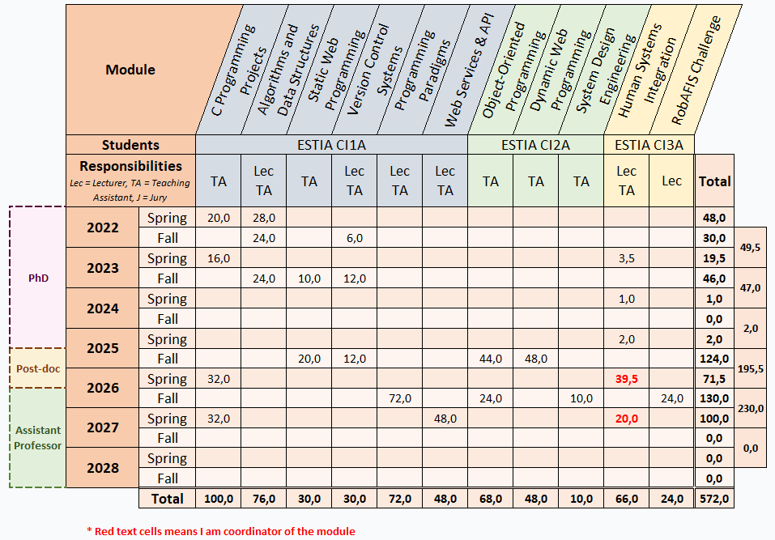

ORCID
ORCID
 Google Scholar
Google Scholar
About
I am currently a post-doctoral researcher within the FlexTech chair and study Human-Systems Integration (HSI) approaches and techniques in the development of complex sociotechnical systems. I obtained my Ph.D. from the Industrial Engineering Laboratory (LGI) at CentraleSupélec and the ESTIA-Recherche laboratory. My PhD program was funded by the CS Research Lab from CS GROUP (A Sopra Steria Company) and was concerned with contextual modeling of military air traffic control operations.
I hold an engineering degree from ENSEIRB-MATMECA (Ecole nationale supérieure d’électronique, informatique, télécommunications, mathématique et mécanique de Bordeaux) in computer science with a specialization in High Performance Computing and Data Science.
Teaching
I teach mainly Computer Science to students from the engineering cycle at ESTIA, with some involvement in the Human Systems Integration course at ESTIA and CentraleSupélec.

Research & Publications
The domains of my research include supporting early design stages throughout Systems Engineering and Systems Architecture processes. In particular, I am interested in Human Systems Integration (HSI) approaches to the design of complex sociotechnical systems. Such approaches include simulation, scenario and contextual modeling, virtual protoypes, cognitive engineering and complex systems modeling. In this regard, I am a member of the FlexTech chair which is a long-term collaboration between both industrial and academic partners. The list of all my academic contributions are listed below in descending chronological order (the PDF files posted here may differ from the final published versions).
OSCAR: Operational System Context Acquisition and Representation
IEEE-AFIS International Workshop on Systems Engineering Research
The operational context of military remote air traffic control centers
Handbook of Socio-Technical Systems (Chapter 30)
Proposition of an ontology supporting scenario elicitation in system modeling
AIAA Journal of Air Transportation
A Context Acquisition Methodology for the Design of Complex Sociotechnical Systems (Highly Commended Paper 🏆)
INCOSE HSI 2024
Defining and characterizing the operational context for human systems integration(Editor's Choice Paper 🏆)
Systems Engineering Journal
Toward a Human Systems Integration approach to the design and operation of a remote and virtual air traffic control center
International Conference on Engineering Design (ICED23)
Administrative Service
- Systems Engineering Journal (Wiley) - Reviewer
- IEA/INCOSE HSI 2024 Conference, Jeju, Korea - Member of the reviewing committee
- FlexTech Human-AI Teaming Spring School 2024, Biarritz, France - Animator of workshop
- SAGIP (Société d'Automatique, de Génie Industriel et de Productique) 2022, Bidart, France - Member of the organizing committee
Education
Doctorat (Ph.D.)
CentraleSupélec, Paris Saclay University — Gif-sur-Yvette
Complex Systems Engineering
Thesis subject: Contribution to the integration of contextual information in the design models of complex sociotechnical systems (More details)
Advisors: Pr. Marija Jankovic, Pr. Guy André Boy · Assistant advisor: Dr. Dimitri Masson · Industrial advisors: Thomas Brethomé, Dr. Anne-Laure Jousselme
Diplôme d'ingénieur (M.Sc equivalent)
ENSEIRB-MATMECA — Talence
Computer Science & High Performance Computing
Bachelor (B.Sc equivalent)
ENSEIRB-MATMECA — Talence
Computer Science
Diplôme Universitaire de Technologie (French two-year university degree in technology)
IUT de Bayonne et du Pays Basque — Anglet
Computer Science
Baccalauréat
Lycée de Borda — Dax
Science